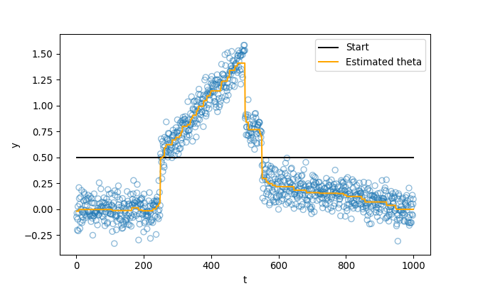

The following external R packages/functions are used:
and the following Python modules are used:
1. Introduction
This note concerns with finding a “signal” in data using a non-separable penalty and coordinate descent. With a very simple model, it will introduce a cost function having a non-separable penalty on parameters to estimate true signals. Also, it will demonstrate that we can use a coordinate descent algorithm with a simple change of variables, albeit non-separable.
2. The problem
The model
Consider observations \(y_1, \dots, y_n \in \mathbb{R}\) which we may believe have the following form: \[y_t = \theta_t + \varepsilon_t\] where \(\varepsilon_t \stackrel{iid}{\sim} N(0, \sigma^2)\) is a white noise. That is, we believe that each data point (\(y_t\)’s) consists of the true “signal” (\(\theta_t\)’s) and the noise term (\(\varepsilon_t\)’s). Our primary objective is to interpolate, i.e. to find \(\theta_t\)’s at each \(t\).
Say the cost function we want to minimize is: \[\text{cost}_1(\theta_1, \dots, \theta_n) := \sum_{t = 1}^{n} (y_t - \theta_t)^2\] This leads to conclude that the minimizers of this cost function are: \[\hat{\theta}_t = y_t\] for all \(t\). But this is boring; we don’t want to conclude that \(P(\varepsilon_t = 0) = 1\) for all \(t\). What we want is to extract and separate the truth from the noise using given data points and an appropriate cost function.
Let’s assume \(\theta_t\)’s are “smooth in general”, i.e. \(|\theta_t - \theta_{t - 1}|\) are small for “most” values of \(t\). That is, for some \(s\) and \(s + 1\), we may have a sudden change between \(\theta_s\) and \(\theta_{s + 1}\) so that \(y_s\) and \(y_{s + 1}\) may exhibit a “jump”. The assumption suggests us to include a penalty term in our cost function to penalize the lack of smoothness. The cost function that incorporates our need is: \[\text{cost}(\theta_1, \dots, \theta_n) := \sum_{t = 1}^{n} (y_t - \theta_t)^2 + \lambda \sum_{t = 2}^{n} |\theta_t - \theta_{t - 1}|\] where \(\lambda\) is a tuning parameter just like in LASSO or ridge regression.
Change of variables
Clearly, the penalty term \(\sum_{t = 2}^{n} |\theta_t - \theta_{t - 1}|\) is not separable. However, inspired from LASSO, we can turn this into a separable penalty. Namely: \[\phi_t := \theta_t - \theta_{t - 1}\] for \(t = 2, \dots, n\). For a complete description, we may define \(\phi_1 := 0\). Then the cost function becomes: \[\text{cost} = \sum_{t = 1}^{n} (y_t - \theta_t)^2 + \lambda \sum_{t = 1}^{n} |\phi_t|\] This separable form suggests us that we can use coordinate descent to find \(\hat{\phi}_t\)’s iteratively, and thereby \(\hat{\theta}_t\)’s.
Using induction, we can conclude that \(\theta_t = \theta_1 + \sum_{s = 2}^{t} \phi_s\) for \(t \geq 2\). That is, the cost can be written as a function of \(\theta_1, \phi_1 ( = 0), \phi_2, \dots, \phi_n\), or: \[\text{cost}(\theta_1, \phi_1 = 0, \phi_2, \dots, \phi_n) = \sum_{t = 1}^{n} (y_t - \theta_t)^2 + \lambda \sum_{t = 1}^{n} |\phi_t|\] or simply: \[\text{cost}(\theta_1, \phi_2, \dots, \phi_n) = \sum_{t = 1}^{n} (y_t - \theta_t)^2 + \lambda \sum_{t = 2}^{n} |\phi_t|\]
Minimizers of this sort of cost function are called fusion estimates.
The minimizers
The fact that cost function is separable allows us to consider the other parameters being fixed and only one parameter being a variable so that we can minimize the cost “one by one”.
First, let \(\phi_2, \dots, \phi_n\) be fixed and \(\theta_1\) be a variable. Then in the cost function, \(\lambda \sum_{t = 2}^{n} |\phi_t|\) becomes a constant, so it becomes equivalent to minimizing \(\sum_{t = 1}^{n} (y_t - \theta_t)^2\). Notice that this is a convex quadratic function of \(\theta_1\):
\[\begin{align*} \sum_{t = 1}^{n}(y_t - \theta_t)^2 &= (y_1 - \theta_1)^2 + \sum_{t = 2}^{n}\big(y_t - \theta_1 - \sum_{s = 2}^{t} \phi_s \big)^2 \\ &= (\theta_1 - y_1)^2 + \sum_{t = 2}^{n} \Big[ \theta_1 - \big( y_t - \sum_{s = 2}^{t} \phi_s \big) \Big]^2 \\ &= (\theta_1 - y_1)^2 + \sum_{t = 2}^{n} \Big[ \theta_1^2 - 2 \theta_1 \big(y_t - \sum_{s = 2}^{t} \phi_s \big) + \big(y_t - \sum_{s = 2}^{t} \phi_s \big)^2 \Big] \\ &= n \theta_1^2 - 2 \theta_1 \Big[ y_1 + \sum_{t = 2}^{n} \big( y_t - \sum_{s = 2}^{t} \phi_s \big) \Big] + \text{constant}(\mathbf{y}, \phi_2, \dots, \phi_n) \end{align*}\]
So the critical value \(\theta_1^*\) that minimizes the above is computed as:
\[\begin{align*} \frac{\partial}{\partial \theta_1} \sum_{t = 1}^{n}(y_t - \theta_t)^2 \Big|_{\theta_1 = \theta_1^*} &= 2n \theta_1^* - 2 \Big[ y_1 + \sum_{t = 2}^{n} \big( y_t - \sum_{s = 2}^{t} \phi_s \big) \Big] = 0\\ \implies \therefore \theta_1^* &= \frac{1}{n} \Big[ y_1 + \sum_{t = 2}^{n} \big( y_t - \sum_{s = 2}^{t} \phi_s \big) \Big] \end{align*}\]
Now, consider \(\theta_1, \phi_2, \dots , \phi_{j - 1}, \phi_{j + 1}, \dots, \phi_n\) are fixed and \(\phi_j\) is a variable (\(j = 2, \dots, n\)). Then the first term of the cost function can be written as:
\[\begin{align*} \sum_{t = 1}^{n} (y_t - \theta_t)^2 &= \underbrace{\phi_1}_{=0} + (y_1 - \theta_1)^2 + \underbrace{\sum_{t < j} \big( y_t - \theta_1 - \sum_{s = 2}^{t} \phi_s \big)^2}_{:= \text{ } 0 \text{ if } j = 2} + \sum_{t \geq j} \big( y_t - \theta_1 - \sum_{s = 2}^{t} \phi_s \big)^2 \\ &= \underbrace{\underset{1 \leq t \leq j - 1}{\text{constant}}(y_{t}, \theta_1, \phi_{t})}_{= \text{ constant1}} + \sum_{t = j}^{n} \big( y_t - \theta_1 - \sum_{s = 2}^{t} \phi_s \big)^2 \\ &= \text{constant1} + \sum_{t = j}^{n} \big(\phi_j - y_t + \theta_1 + \sum_{\underset{s \neq j}{s = 2}}^{t} \phi_s \big)^2 \\ &= \text{constant1} + \sum_{t = j}^{n} \Big[\phi_j^2 - 2 \phi_j \big( y_t - \theta_1 - \sum_{\underset{s \neq j}{s = 2}}^{t} \phi_s \big) + \text{constant2} \Big] \\ &= \sum_{t = j}^{n} \Big[\phi_j^2 - 2 \phi_j \big( y_t - \theta_1 - \sum_{\underset{s \neq j}{s = 2}}^{t} \phi_s \big) \Big] + \text{constant} \\ &= (n - j + 1)\phi_j^2 - 2 \phi_j \sum_{t = j}^{n} \Big[ y_t - \theta_1 - \sum_{\underset{s \neq j}{s = 2}}^{t} \phi_s \Big] + \text{constant} \end{align*}\]
Differentiate this with respect to \(\phi_j\) and obtain the derivative:
\[\frac{\partial}{\partial \phi_j} \sum_{t = 1}^{n}(y_t - \theta_i)^2 = 2(n - j + 1)\phi_j - 2 \sum_{t = j}^{n} \Big[ y_t - \theta_1 - \sum_{\underset{s \neq j}{s = 2}}^{t} \phi_s \Big]\]
which is also the subgradient. Now the second term \(\lambda \sum_{t = 2}^{n} |\phi_t|\) is easy: \[\lambda \sum_{t = 2}^{n} |\phi_t| = \lambda \Big( |\phi_j| + \sum_{t \neq j} |\phi_t| \Big) = \lambda|\phi_j| + \text{constant}\]
Since subgradients are linear, the subgradient with respect to \(\phi_j\) is \(\lambda \partial|\phi_j|\) where \[\partial |\phi_j| = \begin{cases} -1 \hspace{20pt} \text{ if } \phi_j < 0 \\ [-1, 1] \hspace{4pt} \text{ if } \phi_j = 0 \\ 1 \hspace{27pt} \text{ if } \phi_j > 0 \end{cases}\]
so the cost function’s subgradient \(\partial \text{cost}(\phi_j)\) is then: \[\partial \text{cost}(\phi_j) := 2(n - j + 1)\phi_j - 2 \sum_{t = j}^{n} \Big[ y_t - \theta_1 - \sum_{\underset{s \neq j}{s = 2}}^{t} \phi_s \Big] + \lambda \partial|\phi_j|\]
Suppose \(\phi_j^*\) is the value that minimizes \(\text{cost}(\phi_j)\). \(\phi_j^* \neq 0\) if and only if:
\[\begin{align*} &2(n - j + 1)\phi_j^* - 2 \sum_{t = j}^{n} \Big[ y_t - \theta_1 - \sum_{\underset{s \neq j}{s = 2}}^{t} \phi_s \Big] + \lambda \partial|\phi_j^*| = 0 \\ \iff &\begin{cases} (n - j + 1)\phi_j^* - \sum_{t = j}^{n} \big[ y_t - \theta_1 - \sum_{\underset{s \neq j}{s = 2}}^{t} \phi_s \big] - \frac{\lambda}{2} = 0 \text{ given } \phi_j^* < 0 \\ (n - j + 1)\phi_j^* - \sum_{t = j}^{n} \big[ y_t - \theta_1 - \sum_{\underset{s \neq j}{s = 2}}^{t} \phi_s \big] + \frac{\lambda}{2} = 0 \text{ given } \phi_j^* > 0 \end{cases} \\ \iff &\hspace{4pt} \phi_j^* = \begin{cases} (n - j + 1)^{-1} \Big[ \sum_{t = j}^{n} \big[ y_t - \theta_1 - \sum_{\underset{s \neq j}{s = 2}}^{t} \phi_s \big] + \frac{\lambda}{2} \Big] \text{ given } \phi_j^* < 0 \\ (n - j + 1)^{-1} \Big[ \sum_{t = j}^{n} \big[ y_t - \theta_1 - \sum_{\underset{s \neq j}{s = 2}}^{t} \phi_s \big] - \frac{\lambda}{2} \Big] \text{ given } \phi_j^* > 0 \end{cases} \end{align*}\]
Since \((n - j + 1)^{-1} > 0\), the following is required to satisfy each given condition:
\[\begin{align*} \phi_j^* \begin{cases} < 0 \text{ if } \sum_{t = j}^{n} \big[ y_t - \theta_1 - \sum_{\underset{s \neq j}{s = 2}}^{t} \phi_s \big] + \frac{\lambda}{2} < 0 \\ > 0 \text{ if } \sum_{t = j}^{n} \big[ y_t - \theta_1 - \sum_{\underset{s \neq j}{s = 2}}^{t} \phi_s \big] - \frac{\lambda}{2} > 0 \end{cases} \end{align*}\]
Combine these to obtain the non-zero minimizer \(\phi_j^*\): \[\phi_j^* = \begin{cases} (n - j + 1)^{-1} \Big[ \sum_{t = j}^{n} \big[ y_t - \theta_1 - \sum_{\underset{s \neq j}{s = 2}}^{t} \phi_s \big] + \frac{\lambda}{2} \Big] \text{ if } \sum_{t = j}^{n} \big[ y_t - \theta_1 - \sum_{\underset{s \neq j}{s = 2}}^{t} \phi_s \big] < - \frac{\lambda}{2} \\ (n - j + 1)^{-1} \Big[ \sum_{t = j}^{n} \big[ y_t - \theta_1 - \sum_{\underset{s \neq j}{s = 2}}^{t} \phi_s \big] - \frac{\lambda}{2} \Big] \text{ if } \sum_{t = j}^{n} \big[ y_t - \theta_1 - \sum_{\underset{s \neq j}{s = 2}}^{t} \phi_s \big] > \frac{\lambda}{2} \end{cases}\]
Finally, the minimizer \(\phi_j^*\) is \(0\) if \(- 2\sum_{t = j}^{n} \big[ y_t - \theta_1 - \sum_{\underset{s \neq j}{s = 2}}^{t} \phi_s \big] + \lambda[-1, 1] \ni 0\)
\[\begin{align*} &\iff -\lambda - 2\sum_{t = j}^{n} \big[ y_t - \theta_1 - \sum_{\underset{s \neq j}{s = 2}}^{t} \phi_s \big] \leq 0 \leq \lambda - 2\sum_{t = j}^{n} \big[ y_t - \theta_1 - \sum_{\underset{s \neq j}{s = 2}}^{t} \phi_s \big] \\ &\iff \Big| \sum_{t = j}^{n} \big[ y_t - \theta_1 - \sum_{\underset{s \neq j}{s = 2}}^{t} \phi_s \big] \Big| \leq \frac{\lambda}{2} \end{align*}\]
The coordinate descent algorithm is applied as follows:
- Start with \(\boldsymbol{\theta}^{(0)} = (\theta_1^{(0)}, \dots, \theta_n^{(0)})\).
- At iteration \(\ell\), compute \(\boldsymbol{\phi}^{(\ell)} = (\phi_1^{(\ell)}, \phi_2^{(\ell)}, \dots, \phi_n^{(\ell)})\) from \(\boldsymbol{\theta}^{(\ell)}\) as:
\[\begin{align*} \phi_1^{(\ell)} &= 0 \text{ for all } \ell \\ \phi_t^{(\ell)} &= \theta_t^{(\ell)} - \theta_{t - 1}^{(\ell)} \text{ for } t \in \{2, \dots, n \} \end{align*}\]
- Compute \(\text{cost}^{(\ell)} := \text{cost}(\theta_1^{(\ell)}, \phi_2^{(\ell)}, \dots, \phi_n^{(\ell)})\); if \(\ell \geq 1\), compute \(|\text{cost}^{(\ell)} - \text{cost}^{(\ell - 1)}|\) also.
- Compute the minimizers of \(\text{cost}(\theta_1, \phi_2, \dots, \phi_n)\) sequentially:
\[\begin{align*} \theta_1^{(\ell + 1)} &= \frac{1}{n} \Big[ y_1 + \sum_{t = 2}^{n}\big(y_t - \sum_{s = 2}^{t} \phi_s^{(\ell)} \big) \Big] \\ \phi_j^{(\ell + 1)} &= \underset{\phi_j}{\text{argmin}} \Big( \text{cost}(\theta_1^{(\ell + 1)}, \phi_2^{(\ell + 1)}, \dots, \phi_{j - 1}^{(\ell + 1)}, \phi_j, \phi_{j + 1}^{(\ell)}, \dots, \phi_n^{(\ell)}) \Big) \text{ } \forall \text{ } j \geq 2 \end{align*}\]
- Compute \(\boldsymbol{\theta}^{(\ell + 1)} = (\theta_1^{(\ell + 1)}, \theta_2^{(\ell + 1)}, \dots, \theta_n^{(\ell + 1)})\) as: \[\theta_t^{(\ell + 1)} = \theta_1^{(\ell + 1)} + \sum_{s = 2}^{t} \phi_s^{(\ell + 1)}\] for \(t \geq 2\).
- Repeat from step 2 to 5 until \(|\text{cost}^{(\ell + 1)} - \text{cost}^{(\ell)}|\) is no longer greater than some predefined threshold.
3. An example
The data
Suppose \(n = 1000\), and: \[\theta_t = \begin{cases} 0 & 1 \leq t \leq 249 \\ f(t) = \frac{t}{250} - .5 & 250 \leq t \leq 500 \\ .75 & 501 \leq t \leq 550 \\ g(t) = -\frac{.25}{449}t + \frac{250}{449} & 551 \leq t \leq 1000 \end{cases}\] With the following white noise \(\varepsilon_t \stackrel{iid}{\sim} N(0, \sigma^2 = .1)\), let’s generate the data y:
set.seed(1024)
n <- 1000
t <- 1:n
f <- function(t) {t / 250 - .5}
g <- function(t) {-(.25 / 449) * t + 250 / 449}
true_theta <- c(rep(0, 249), f(250:500), rep(.75, 50), g(551:1000))
y <- true_theta + rnorm(1000, 0, 0.1)
qplot(t, y)
The function fusion_estimates implements the algorithm described above:
fusion_estimates <- function(y, theta, lambda, max_iter = 100, eps = 1e-5) {
n <- length(y)
if (missing(theta)) {theta <- y}
if (length(theta) != n) {
stop(paste0(
'\nError in fusion_estimates():\n',
'The length of given initial theta is ', length(theta),
', which is not equal to length(y) == ', n, '.'
))
}
phi <- diff(theta)
phisums_old <- cumsum(phi)
theta_1_new <- (sum(y) - sum(phisums_old)) / n
cost <- sum((y - theta)^2) + lambda * sum(abs(phi))
costs <- NULL
costs[1] <- cost # costs
there_is_a_progress <- T
iter <- 0
while (there_is_a_progress & iter < max_iter) {
# Store new phi_1 (= 0) to phi_n in phi_new
phi_new <- numeric(length = n)
for (j in 2:n) {
phisums_new <- cumsum(phi_new)
req <- sum(
phisums_old[(j - 1):(n - 1)] -
phisums_old[j - 1] + phisums_new[j - 1]
)
discri <- sum(y[j:n]) - (n - j + 1) * theta_1_new - req
if (discri < -lambda / 2) {
phi_new[j] <- (discri + lambda / 2) / (n - j + 1)
} else if (discri > lambda / 2) {
phi_new[j] <- (discri - lambda / 2) / (n - j + 1)
} # already 0 otherwise
}
phi_new <- phi_new[-1]
phisums_new <- phisums_new[-1]
theta <- c(theta_1_new, theta_1_new + phisums_new)
cost <- sum((y - theta)^2) + lambda * sum(abs(phi_new))
theta_1_new <- (sum(y) - sum(phisums_new)) / n
phisums_old <- phisums_new
iter <- iter + 1
costs[iter + 1] <- cost
there_is_a_progress <- !(abs(costs[iter] - cost) <= eps)
}
list(
theta = theta,
phi = phi_new,
lambda = lambda,
iter = iter,
costs = costs # the first cost is calculated at iteration 0
)
}First, let’s see if the cost function monotonically decreases as we iterate. We start with:
- \(\theta^{(0)} = .5 \times \mathbf{1}_{n \times 1}\)
- \(\lambda = 1\)
- Maximum iteration of 1000
These choices are arbitrary.
Start <- rep(.5, n)
start_r <- Sys.time()
example1 <- fusion_estimates(y, theta = Start, lambda = 1, max_iter = 1000)
end_r <- Sys.time()
qplot(
seq_along(example1$costs) - 1, example1$costs,
geom = 'line',
xlab = 'Iteration', ylab = 'Cost function'
)It does monotonically decrease, indicating the convergence of the \(\text{cost}\) by the monotone convergence theorem (since \(\text{cost}\) is non-negative). This is how the estimated theta of example1 looks like:
tibble(t, y, Start, `Estimated theta` = example1$theta) %>%
gather(Type, value, -(t:y)) %>%
mutate(Type = factor(Type, levels = c('Start', 'Estimated theta'))) %>%
ggplot(aes(x = t)) +
geom_point(aes(y = y), pch = 21, alpha = .25) +
geom_line(aes(y = value, col = Type)) +
scale_colour_manual(values = c('#56B4E9', 'black')) +
labs(col = '') +
theme(
legend.background = element_rect(fill = 'transparent'),
legend.position = c(.845, .895)
)
The estimated theta is not so smooth since \(\lambda = 1\) is quite small.
Perhaps the relationship between \(\lambda\) and the smoothness of signals is the one we want to look at. With the same max_iter (100) and theta (rep(mean(y), n)), we shall try different values of lambda and see how theta is computed for each lambda:
pmap(
list(lambda = list(5, 10, 20, 50, 100)),
fusion_estimates,
y = y, theta = rep(mean(y), n)
) %>%
sapply(function(d){d$theta}) %>%
'colnames<-'(c('5', '10', '20', '50', '100')) %>%
as_tibble() %>%
cbind(tibble(t = t, y = y)) %>%
gather(lambda, value, -(t:y)) %>%
mutate(
lambda = factor(lambda, levels = c('5', '10', '20', '50', '100'))
) %>%
ggplot(aes(x = t, y = y, col = lambda)) +
geom_point(pch = 21, alpha = .1) +
geom_line(aes(y = value)) +
theme(legend.position = 'top')The plot reveals that as lambda gets bigger, theta converges to mean(y). This makes sense because a large enough lambda will make all of \(\phi_j^*\)’s to be exactly \(0\), and all of \(\theta_t\)’s will be equal to \(\theta_1 = \frac{1}{n}\sum_{t = 1}^{n}y_t\). So in a sense, theta becomes smooth as lambda increases; it gets very smooth that it becomes a constant (mean(y)).
Below are plots having max_iter = 5000, theta = y (which is the default of fusion_estimates if theta is not specified), and lambda equal to .1, 1, 10, 100, and 1000.
pmap(
list(lambda = list(.1, 1, 10, 100, 1000)),
fusion_estimates, y = y, max_iter = 5000
) %>%
sapply(function(d){d$theta}) %>%
'colnames<-'(c(
'lambda = 0.1', 'lambda = 1', 'lambda = 10',
'lambda = 100', 'lambda = 1000'
)) %>%
as_tibble() %>%
cbind(tibble(t = t, y = y)) %>%
gather(lambda, value, -(t:y)) %>%
ggplot(aes(x = t, y = y, col = lambda)) +
geom_point(pch = 21, alpha = .05, col = 'black') +
geom_line(aes(y = value), size = .25) +
facet_wrap(lambda ~ ., ncol = 1) +
theme(legend.position = 'none')There are two finding from these plots: one finding is that theta is essentially a piecewise constant function (or an approximation by a step function), and the other is that up until a certain point, a bigger lambda leads to a “smoother” theta within a “reasonable range of data” (see the case of lambda = 0.1 and lambda = 1). But if lambda gets bigger than that certain point, then smoothness of theta does not help us finding a true signal from y.
Choosing \(\lambda\)
See here for details.
Python implementation
Here’s an equivalent Python-version of fusion_estimates:
def fusion_estimates(y, lambd, theta = None, max_iter = 1000, eps = 1e-05):
'''(np.array, number[, np.array, int, number]) ->
{str: np.array or number}
Preconditions:
1. len(y) == len(theta) if theta specified.
2. lambd > 0 and eps > 0
3. max_iter > 1
Return the dictionary that stores:
- 'theta', the fusion estimates of y iterated from theta with the
maximum iteration max_iter and the cost difference threshold eps.
- 'phi', the differences of each 'theta'
- 'lambd', the lambd specified
- 'iteration', the number of iterations, and
- 'costs', the cost function evaluated at each iteration where the
first cost is calculated at iteration 0.
'''
n = len(y)
if theta is None:
theta = y.copy()
phi = np.diff(theta)
phisums_old = np.cumsum(phi)
theta_1_new = (sum(y) - sum(phisums_old)) / n
cost = sum((y - theta) ** 2) + lambd * sum(abs(phi))
costs = []
costs.append(cost)
there_is_a_progress = True
iteration = 0
while there_is_a_progress and iteration < max_iter:
phi_new = np.zeros(n)
for j in range(1, n):
phisums_new = np.cumsum(phi_new)
req = sum(
phisums_old[(j - 1):(n - 1)] -\
phisums_old[j - 1] + phisums_new[j - 1]
)
discri = sum(y[j:n]) - (n - (j + 1) + 1) * theta_1_new - req
if discri < -lambd / 2:
phi_new[j] = (discri + lambd / 2) / (n - (j + 1) + 1)
elif discri > lambd / 2:
phi_new[j] = (discri - lambd / 2) / (n - (j + 1) + 1)
phi_new = phi_new[1:]
phisums_new = phisums_new[1:]
theta = np.append(theta_1_new, theta_1_new + phisums_new)
cost = sum((y - theta) ** 2) + lambd * sum(abs(phi_new))
theta_1_new = (sum(y) - sum(phisums_new)) / n
phisums_old = phisums_new
iteration += 1
costs.append(cost)
there_is_a_progress = not (abs(costs[iteration - 1] - cost) <= eps)
result = {
'theta': theta,
'phi': phi_new,
'lambd': lambd,
'iteration': iteration,
'costs': np.array(costs)
}
return resultLet’s see if it works:
# Loading data from R
y = np.array(r.y) # the same y as in R
t = np.array(r.t)
start = np.array(r.Start)
t_0 = np.append(0, t)
start_py = dt.now()
example1 = fusion_estimates(y = y, lambd = 1, theta = start)
end_py = dt.now()
plt.plot(t_0, example1['costs'])
plt.xlabel('Iteration')
plt.ylabel('Cost')
plt.show()## [<matplotlib.lines.Line2D object at 0x000001D9F08F8DD8>]## Text(0.5, 0, 'Iteration')## Text(0, 0.5, 'Cost')plt.clf()
plt.scatter(t, y, facecolors = 'none', edgecolors = '#1f77b4', alpha = .5)
plt.plot(t, start, c = 'black', label = 'Start')
plt.plot(t, example1['theta'], c = 'orange', label = 'Estimated theta')
plt.legend(loc = 'upper right')
plt.xlabel('t')
plt.ylabel('y')
plt.show()## <matplotlib.collections.PathCollection object at 0x000001D9F0AA09E8>## [<matplotlib.lines.Line2D object at 0x000001D9F09322E8>]## [<matplotlib.lines.Line2D object at 0x000001D9F0AA0C88>]## <matplotlib.legend.Legend object at 0x000001D9F0ABE550>## Text(0.5, 0, 't')## Text(0, 0.5, 'y')
Yes it does. In Python, it takes:
## '0:01:52.618012'minutes (!). In R, it takes:
## Time difference of 13.06109 secsSession Info
R session info:
## R version 3.6.1 (2019-07-05)
## Platform: x86_64-w64-mingw32/x64 (64-bit)
## Running under: Windows 10 x64 (build 18362)
##
## Matrix products: default
##
## locale:
## [1] LC_COLLATE=English_Canada.1252 LC_CTYPE=English_Canada.1252
## [3] LC_MONETARY=English_Canada.1252 LC_NUMERIC=C
## [5] LC_TIME=English_Canada.1252
##
## attached base packages:
## [1] stats graphics grDevices utils datasets methods base
##
## other attached packages:
## [1] dplyr_0.8.3 reticulate_1.13 pROC_1.15.3
## [4] ggrepel_0.8.1 ggplot2_3.2.1 funpark_0.2.6
## [7] data.table_1.12.2 boot_1.3-22 rmarkdown_1.15
## [10] magrittr_1.5 itertools2_0.1.1
##
## loaded via a namespace (and not attached):
## [1] prettydoc_0.3.0 tidyselect_0.2.5 xfun_0.9 purrr_0.3.2
## [5] lattice_0.20-38 colorspace_1.4-1 vctrs_0.2.0 htmltools_0.3.6
## [9] yaml_2.2.0 utf8_1.1.4 rlang_0.4.0 pillar_1.4.2
## [13] glue_1.3.1 withr_2.1.2 plyr_1.8.4 stringr_1.4.0
## [17] munsell_0.5.0 gtable_0.3.0 evaluate_0.14 labeling_0.3
## [21] knitr_1.24 fansi_0.4.0 Rcpp_1.0.1 readr_1.3.1
## [25] scales_1.0.0 backports_1.1.4 jsonlite_1.6 hms_0.5.1
## [29] png_0.1-7 digest_0.6.20 stringi_1.4.3 grid_3.6.1
## [33] cli_1.1.0 tools_3.6.1 lazyeval_0.2.2 tibble_2.1.3
## [37] crayon_1.3.4 tidyr_0.8.3 pkgconfig_2.0.2 zeallot_0.1.0
## [41] Matrix_1.2-17 xml2_1.2.2 assertthat_0.2.1 rstudioapi_0.10
## [45] iterators_1.0.12 R6_2.4.0 compiler_3.6.1Python session info:
## -----
## matplotlib 3.1.1
## numpy 1.17.0
## -----
## Python 3.7.2 (tags/v3.7.2:9a3ffc0492, Dec 23 2018, 23:09:28) [MSC v.1916 64 bit (AMD64)]
## Windows-10-10.0.18362-SP0
## 4 logical CPU cores, Intel64 Family 6 Model 78 Stepping 3, GenuineIntel
## -----
## Session information updated at 2019-11-01 02:14